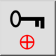
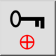
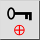
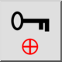

Bloqueo cero relativo
Barra de herramienta / icono:
 

Menú: Forzar > Bloqueo cero relativo
Acceso directo: R, L
Comandos: lockrelativezero | rl
Esta es una traducción automática.
Barra de herramienta / icono:
 

Menú: Forzar > Bloqueo cero relativo
Acceso directo: R, L
Comandos: lockrelativezero | rl
Cuando está habilitado, este interruptor bloquea la posición del punto cero relativo. Esto significa que no se mueve automáticamente, pero aún así se puede mover manualmente usando la herramienta para ajustar la posición del punto cero relativo